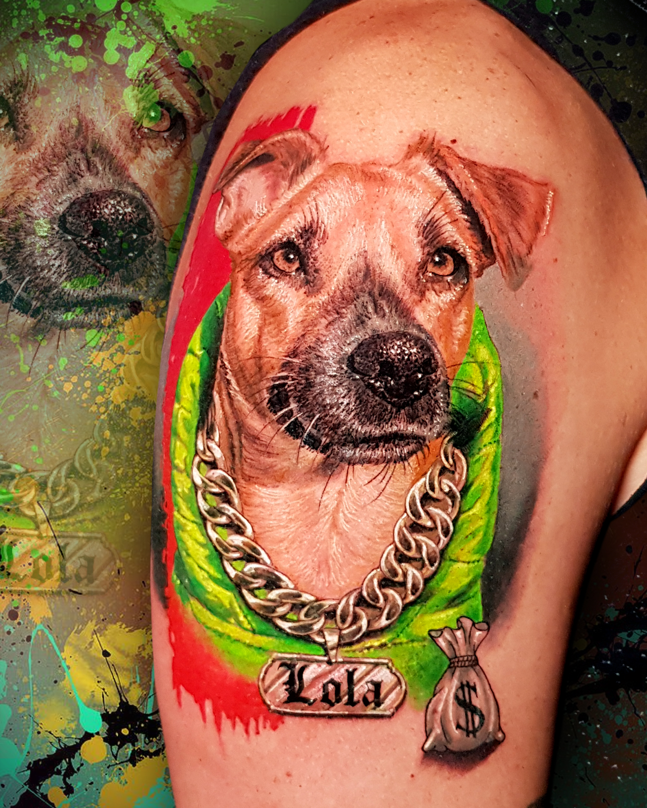

Arbeiten
Ganze Gallery →
Frisch gestochen



Egal ob Mini-Tattoo, kleines Motiv am Arm oder ein einzigartiges Werk mit höchstem künstlerischem Anspruch — unsere Tätowierer bieten Dir eine praktisch unendliche Vielfalt an Motiven, helfen bei der kreativen Entwicklung Deiner Ideen und sorgen dafür, dass aus einem guten Tattoo Dein perfektes Tattoo wird.
Jeder unserer Artisten kennt seine Stärken sehr genau — denn das beste Tattoo entsteht, wenn Stil, Motiv und Künstler zusammenpassen.
Unsere Tattoo-Preise richten sich nach Größe, Stelle, Motiv, Stilrichtung und vielen weiteren Faktoren, die eine große Rolle spielen.
Der Mindestpreis beginnt bei 130.– CHF, wobei der Preis für eine Tagessitzung je nach Aufwand zwischen 1100 – 1400.– CHF variieren kann.
Gerne kannst Du für eine kostenlose Beratung und einen Kaffee bei uns im Studio vorbeikommen. Falls Du knapp mit der Zeit bist, schick uns Dein Motiv einfach für einen Preisvergleich zu.
Um einen Termin zu fixieren, ist eine Anzahlung von mindestens 100.– CHF zu entrichten.
Nur Bares ist Wahres — ob Euro oder Franken spielt dabei keine Rolle.
Ein Gutschein mit ausgefallenem Design, gültig auf alle Artikel und Behandlungen bei uns im Store. Personalisiert und nur mit aktuellem Lichtbildausweis gültig.
Wir arbeiten mit internationalen Gewinner-Artisten, um Deine Vorstellungen unter die Haut zu bringen. Die liebevolle, familiäre Atmosphäre erlebst Du schon beim unverbindlichen Beratungsgespräch.
Damit Du lange Freude an Deiner Tätowierung hast und ein komplikationsloses Abheilen gewährleistet ist, beachte bitte diese Hinweise genau.
Das frische Tattoo wurde desinfiziert und mit Wundsalbe sowie Frischhaltefolie erstversorgt. Entferne nach etwa 2 Stunden vorsichtig die Folie und wasche die gesamte Tätowierung großflächig mit lauwarmem Wasser und pH-neutralem Shampoo.
Tattoo mit einem sauberen, fusselfreien Tuch (z. B. Küchenrolle) abtupfen und gleichmäßig Wundsalbe auftragen — keine Folie mehr anbringen. Verwende nicht zu viel Salbe, es sollte nur ein leichter Salbenfilm auf der Haut liegen.
Überwache die Tätowierung morgens und abends, entferne alte Salbenreste und Wundsekrete. Nach dem Waschen mit einem Hautdesinfektionsmittel desinfizieren und alle 3–4 Stunden hauchdünn mit der empfohlenen Wund- und Heilsalbe eincremen — bis sich der dünne Schorf vollständig gelöst hat. Vor dem Eincremen die Hände gründlich reinigen!
Auch wenn nach ein paar Tagen Juckreiz auftritt: nicht kratzen oder reiben! Verklebt die Stelle mit Kleidung oder Bettwäsche, hilft lauwarmes Wasser, um die Verklebung schonend zu lösen — bitte nie mit Gewalt.
Während und ca. 5 Wochen danach sind Sonne, Solarium, Sauna und Chlorwasser verboten. Bei Komplikationen zuerst das Studio kontaktieren, danach sofort einen Arzt aufsuchen.
„So wie es verheilt, wird es später aussehen." — Bei Fragen während der Abheilung komm einfach bei uns im Shop vorbei. Dein Riverside Ink Team.